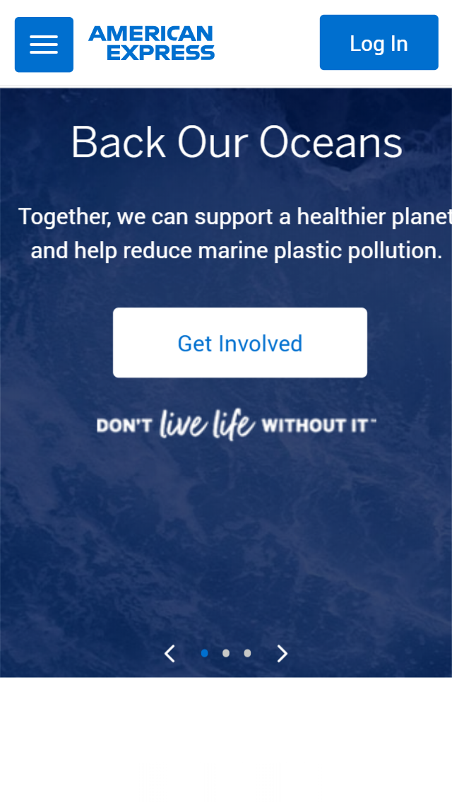

Contrast
Adidas
https://www.adidas.com

Adidas uses the opposite colors of black and white throughout
their design. The strong difference between these two colors makes
each button stand out and easy to locate. The mobile
version of their site contains commonly used icons
of search and shop,
in white, against the dark background. They are conveniently located
at the top of the home page.
Repetition
American Express
https://www.americanexpress.com

The trademark blue and white colors appear throughout the
home page in the buttons
and the background.
The menu and logo are
blue and
white as well.
Different shades of blue
are used, but those two colors can be found
in every area
of the site. The essential buttons like login and menu are right
at the top for easy navigating.
Visual Hierarchy
Apple
https://www.apple.com

I found this site fascinating.
It immediately captivates the
user with the intricate
photo on the home page. The black
and white contrast background and font
draws in the eye to the large text, and then
the blue
text gets your attention immediately after.
Overall very simple,
yet
very effective at visually captivating the user.